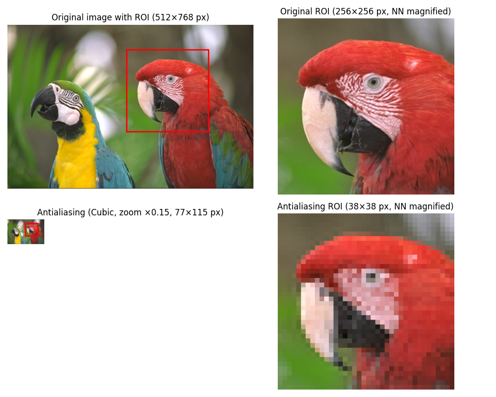
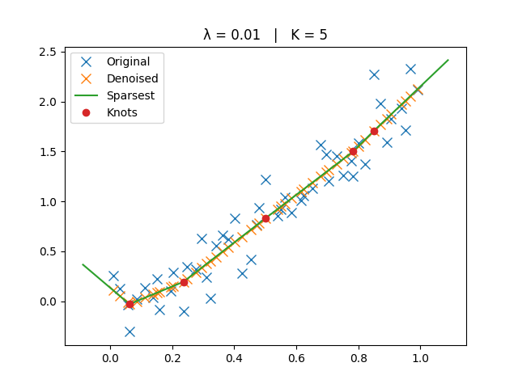
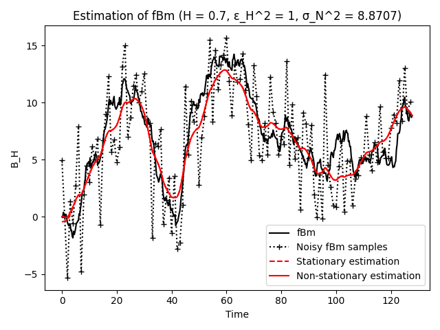
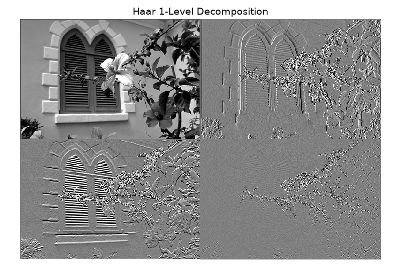

User Guide#
This guide provides detailed explanations, tutorials, and examples to use the modules available in SplineOps.
Module Overview#

Spline Interpolation
Extensible Python-based interpolation class for multidimensional data.

Resize
Fast, top quality projection methods to resample multidimensional data.

Affine
Affine transforms on 2D/3D data using spline interpolation.

Adaptive Regression Splines
Perform sparsest linear regression on 1D data.

Smoothing Splines
Fit splines to noisy data.

Differentials
Compute first and second-order derivatives on 2D images.

Multiscale
Analyze 1D signals and 2D images at multiple scales.